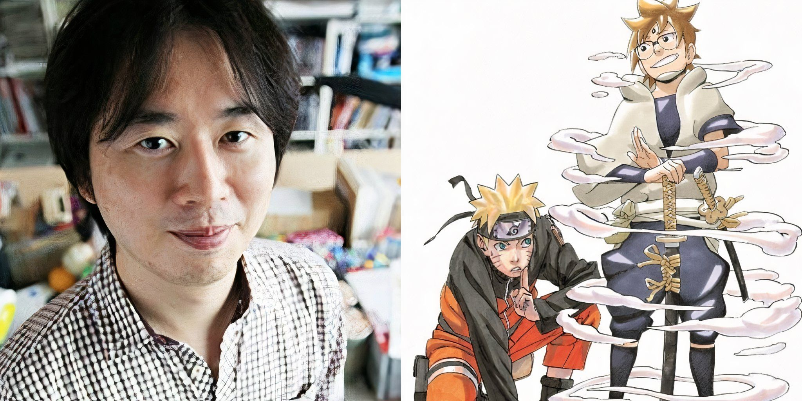
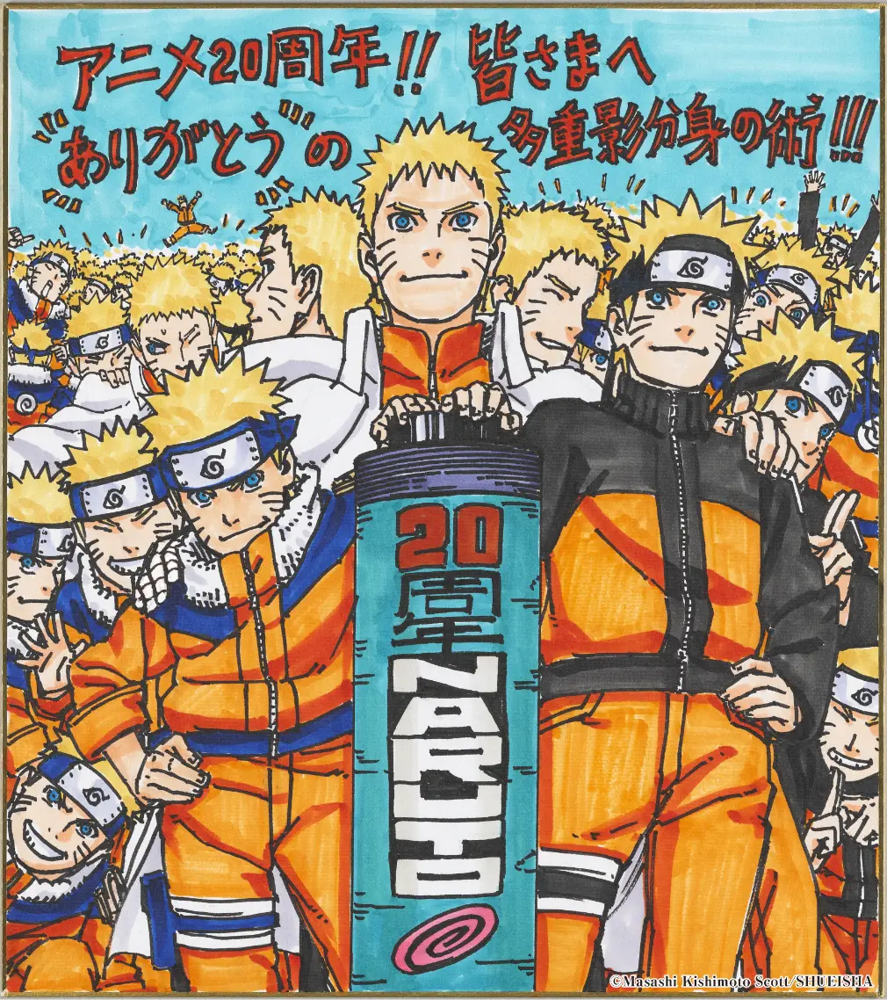

Masashi Kishimoto
The Greatest Mangaka of All Time


Early life and early projects:
Masashi Kishimoto is a world renowned Mangaka (manga author)
who created the biggest worldwide Manga and anime of all time. Born on November 8th,
1974 in The okayama prefecture, in Japan as the
older identical twin of Seishi Kishimoto. Even at a young age Masashi showed great
interest in drawing anime, one of his main hobbies would be to draw characters from
his favourite shows,
Dr.Slump ,
Arale Norikami,
Doraemon. In elementary school Him
and his brother started the anime that really jumpstarted his passion of being a mangaka.
Masashi kishimoto started idolising
Dragon ball's Author
Akira Toriyama(RIP), enjoying not only his series Dragon Ball and Dr. Slump, but also
Dragon Quest, a role-playing video game for which Toriyama was art designer. While he
could not afford to buy Weekly Shōnen Jump where the Dragon Ball manga was published,
he followed the series thanks to a friend from school who had subscribed to the
magazine. By high school, Kishimoto started losing interest in manga as he started
playing baseball and basketball (like yours truly) However, upon seeing a poster
for the animated film Akira, Kishimoto became fascinated with the way the
illustration was made and wished to imitate the series' creator Katsuhiro Otomo's
style In an attempt to pursue his dream of becoming a manga artist, Kishimoto
attended an art college and spent time drawing manga throughout his last years of
education.[8] Since Weekly Shōnen Jump had not released a manga in the Chanbara
genre, Kishimoto thought he should try his hand at writing one after starting
college. But in those same years, Kishimoto began reading works in this genre,
like as Blade of the Immortal by Hiroaki Samura and Rurouni Kenshin by Nobuhiro
Watsuki. After reading Akira, Kishimoto says he has never been astonished by manga
and realized he still couldn't match with them. Kishimoto began creating manga
for magazine contests during his sophomore year of college. But he pointed out that
his writing was geared for a younger audience, much like seinen manga. mature
readership as opposed to children's shōnen manga.[10] Kishimoto felt his style
was inappropriate for Shōnen Jump and wished to make a manga for the magazine that
appeals to a younger audience. Kishimoto began studying the works of animators
after being taken aback by the character designs used in the anime series Hashire
Melos!. Later on, he got to know Tetsuya Nishio, the designer of the anime version
of the manga Ninku, who he considered to be a major inspiration. Kishimoto
observed that his style began to resemble shōnen series, and he was now mimicking
the style of drawing from numerous character designers from anime series.
Assistants:
- Kazuhiro Takahashi
- Osamu Kajisa
- Mikio Ikemoto (main and chief of illustrations)
- Takemi Kawahara
- Kōichi Nishiya
- Ryō Tasaka
- Akira Ōkubo
- Yūichi Itakura
- Masaki Murakami
- Atsuhiro Satō
- Akio Shirasaka
- Kenji Taira